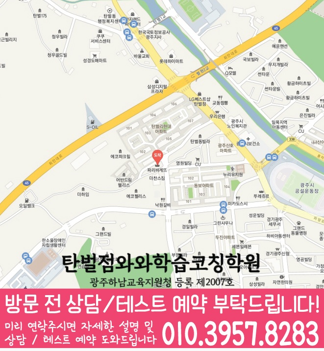

시험에서 자주 틀리는 파트(문법/어휘/독해/서술형)를 먼저 확인하고, 단원별로 꼭 필요한 학습 순서를 정해 효율을 높입니다.


LOCAL ACADEMY GUIDE
경기 광주시 경안동 중2 영어학원 와와학습코칭센터 학습 안내
경기 광주시 경안동에서 중2 영어를 준비하는 학생을 위해, 학교 내신 흐름에 맞춘 문법·독해·서술형 학습 로드맵을 안내합니다. 와와학습코칭센터는 학생의 현재 성취와 오답 패턴을 먼저 진단한 뒤, 개념 정리→유형 훈련→오답 관리→시험 대비 복습까지 이어지는 체계적인 학습 코칭을 제공합니다. 꾸준히 반복되는 영어 실력 향상 습관을 함께 만들어드립니다.
경안동 중2 영어 수업 핵심 포인트
규칙을 외우는 방식이 아니라 예문과 문제를 통해 작동 원리를 잡고, 유형 문제로 자연스럽게 적용합니다.
지문에서 정답의 근거를 찾는 방식으로 독해 습관을 만들며, 문장 해석이 흔들리지 않도록 반복 점검합니다.
선생님 특징
학생이 어디에서 막히는지 질문과 풀이 과정으로 확인하고, 같은 실수가 반복되지 않도록 개념을 다시 연결해 줍니다.
단순 오답을 모으는 것을 넘어, 어휘·문장 구조·문법 적용·시간 부족 중 무엇이 문제인지 구체적으로 분석합니다.
오답을 다시 풀게만 하지 않고, 유형별 풀이 원칙과 재발 방지 체크리스트로 관리해 시험에서 바로 써먹게 합니다.
수업 진행방식
1. 현재 수준 확인
최근 시험/단원 진도/오답 데이터를 바탕으로 문법·독해·서술형에서 약한 영역과 자주 틀리는 패턴을 정리합니다.
2. 개념 정리와 내신 유형 학습
학교 시험에 자주 나오는 핵심 개념을 먼저 정리한 뒤, 기본 문제→중간 유형→서술형/변형 문제까지 단계적으로 훈련합니다.
3. 오답 관리와 시험 피드백
틀린 이유를 문법 적용/어휘 해석/문장 구조/독해 근거 중 하나로 분류하고, 다음 시험까지 이어지는 복습 계획을 제공합니다.
4. 공부 습관 코칭(영어 학습 루틴)
숙제·복습·단어 정리·오답 재정리까지 루틴으로 관리해 수업 이후에도 성장이 이어지도록 돕습니다.
중2 영어 학습 전략(경안동 내신 대비)
문법/어휘
- 단원별 필수 문법 포인트를 정리하고, 같은 유형을 반복해서 적용합니다.
- 시험에서 점수로 연결되는 어휘(동의어/유사 표현/문맥 의미)를 내신형으로 훈련합니다.
독해
- 지문 근거 찾기→문장 해석→문항 풀이 순서로 정확도를 높입니다.
- 오답 유형을 ‘근거 부족/해석 오류/문장 구조 혼동’으로 나누어 재발을 방지합니다.
서술형/수행평가
- 문장 완성, 빈칸 추론, 이유 서술까지 채점 기준에 맞게 훈련합니다.
- 모범답안이 아니라 “왜 그렇게 되는지”를 학습해 점수대가 유지되게 합니다.
시험 대비 복습
- 시험 범위에 맞춰 복습 우선순위를 정하고, 약한 단원부터 효율적으로 마무리합니다.
- 시험 전에는 실수 유형과 오답 패턴을 집중 점검해 실점 요인을 줄입니다.
중2 종합 관리가 필요한 학생(영·수·국·영수)
영어에 영향을 주는 독서·문장 이해 습관, 국어식 읽기 방식도 같이 점검해 학습 편차를 줄입니다.
수학 역시 오답 관리와 개념 적용을 같은 방식으로 코칭해, 전 과목 공부 습관을 안정화합니다.
중2는 과목별 누적이 커지는 시기이므로, 영어는 집중적으로 강화하면서 필요한 과목은 맞춤 보완합니다.
경기 광주시 경안동 중2 영어학원으로 와와학습코칭센터를 찾는다면, 현재 수준과 오답 원인을 기준으로 영어 내신 로드맵을 세워드립니다. 상담을 통해 경안동 중2 영어 학습 방향과 시험 대비 계획을 자세히 안내드립니다.
센터 위치 안내
주소
경기 광주시 벌원길 61 2층
오시는 길
~ 와와학습코칭센터 탄벌점 위치는 (경기 광주시 벌원길 61 2층)입니다.
주요 타깃학교(이외 학교도 수업 가능)
초등 타깃학교
정보 준비중
중등 타깃학교
정보 준비중
고등 타깃학교
정보 준비중
과목별 수강 가능 학년
국어
초1
초2
초3
초4
초5
초6
중1
중2
중3
영어
초1
초2
초3
초4
초5
초6
중1
중2
중3
고1
고2
고3
수학
초1
초2
초3
초4
초5
초6
중1
중2
중3
고1
고2
고3
과학
초1
초2
초3
초4
초5
초6
중1
중2
중3
사회
수강 가능 학년 정보 준비중
학원 등록 정보
수업료는 어떻게 되나요? ✨
A - 서울 (1회 90-100분 수업기준)
| 횟수 | 초등 | 중등 | 고등 |
|---|---|---|---|
| 주 3회 | 249,000 | 266,000 | 299,000 |
| 주 4회 | 319,000 | 341,000 | 384,000 |
| 주 5회 | 389,000 | 416,000 | 469,000 |
B - 서울 외 지점 (1회 90-100분 수업기준)
| 횟수 | 초등 | 중등 | 고등 |
|---|---|---|---|
| 주 3회 | 219,000 | 236,000 | 269,000 |
| 주 4회 | 279,000 | 301,000 | 344,000 |
| 주 5회 | 339,000 | 366,000 | 419,000 |
* 수업료는 지역 및 횟수에 따라 일부 차이가 있을 수 있습니다.
중2 영어 상담부터 오답관리까지 이어지는 흐름
중2 영어는 문법 개념과 독해 습관이 본격적으로 쌓이는 시기입니다. 상담에서는 학교 시험 범위, 교과서·부교재, 어휘 누적량, 문법 이해도, 본문 암기 상태, 서술형 감점 요인을 함께 확인해 학생에게 맞는 학습 순서를 잡습니다.
현재 수준 확인
최근 시험지, 학교 범위, 단어 암기 상태, 문법 취약점, 독해 속도와 실수 유형을 확인합니다.
문법·독해 진단
문장 구조 분석, 핵심 문법 적용, 지문 주제 파악, 선택지 판단 과정을 나누어 봅니다.
플래너 실행 점검
단어 누적, 본문 암기, 문법 유형 반복, 서술형 복습 계획을 세우고 실제 수행 여부를 확인합니다.
오답 원인 분석
틀린 문제를 어휘 부족, 문법 혼동, 해석 오류, 선택지 판단 실수, 서술형 표현 부족으로 분류해 다음 학습으로 연결합니다.
MIDDLE SCHOOL ENGLISH FAQ
중2 영어학원 FAQ
Q중2 영어는 어떤 부분부터 확인하나요?
학교 시험 범위와 최근 시험지를 바탕으로 어휘, 문법, 독해, 본문 암기, 서술형 중 어느 부분에서 점수가 흔들리는지 먼저 확인합니다.
Q중2 내신 영어와 중3 과정 준비를 함께 할 수 있나요?
가능합니다. 중2 내신 범위를 우선 관리하면서 중3 영어로 이어지는 문법 체계, 지문 독해, 어휘 누적, 서술형 표현까지 함께 점검합니다.
Q중2 영어 오답 관리는 어떻게 진행되나요?
틀린 문제를 어휘 부족, 문법 개념 혼동, 지문 해석 오류, 선택지 판단 실수, 서술형 감점 요인으로 나누어 다시 학습합니다.
Q상담 전에 무엇을 준비하면 좋나요?
최근 영어 시험지, 학교 교과서·부교재 범위, 단어장, 수행평가 자료, 자주 틀리는 유형을 준비하면 더 구체적인 상담이 가능합니다.
REAL PARENT REVIEWS
수강생 학부모 후기
경안동 중2 영어학원 정보를 확인하신 학부모님들이 참고할 수 있는 실제 학습 후기입니다.
학생들이 안전하게 다닐 수 있도록 관리해 주십니다.
아이의 실력에 맞춰 수업을 진행해 주셔서 학습 효과가 높았습니다.
단기간의 점수보다 올바른 공부 방법을 알려주셔서 좋았습니다.
수업과 상담 모두 세심하게 진행되어 만족하고 있습니다.
학부모가 놓치기 쉬운 부분까지 세심하게 안내해 주셨습니다.
학습 결과가 좋지 않을 때 원인을 함께 찾아주셔서 도움이 되었습니다.
STUDY GUIDE
경안동 중2 영어 학원 학습관리 포인트
경안동 중2 영어 학원을 찾는 학생이라면 중2 과정에서 필요한 영어 학습 목표를 먼저 정리하는 것이 좋습니다. 현재 학교 진도와 최근 시험 결과, 숙제 수행 습관을 함께 보면 상담 방향이 훨씬 구체적입니다.
시험 직전에 한꺼번에 외우기보다 지문별 핵심 어휘와 표현을 주간 단위로 누적 관리합니다.
감으로 해석하지 않고 주어·동사·수식어 구조를 표시해 독해 근거를 남기는 습관을 만듭니다.
본문 암기에서 끝내지 않고 빈칸, 순서, 어법, 서술형으로 바뀔 수 있는 문장을 따로 정리합니다.
경기 광주시 경안동 상담 전 체크
최근 시험지, 학교 진도, 어려운 단원, 숙제 수행 정도를 함께 정리해두면 상담에서 학생에게 필요한 학습 순서를 더 빠르게 잡을 수 있습니다.
함께 보면 좋은 학습가이드
현재 페이지의 학년·과목과 연결되는 정보성 콘텐츠입니다. 지역 페이지와 함께 읽으면 상담 준비와 학습 계획을 더 구체화할 수 있습니다.
경안동 관련 학원 페이지
현재 보고 있는 지역 안에서 센터 안내와 학년·과목별 상세 페이지로 바로 이동할 수 있습니다.
경안동 중2 영어학원 상담이 필요하신가요?
중2 영어의 현재 어휘·문법·독해 수준, 내신 대비 계획, 중3 과정 준비, 오답 패턴을 상담문의로 남겨주시면 학습 방향을 구체적으로 확인할 수 있습니다.
상담문의